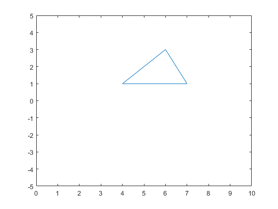
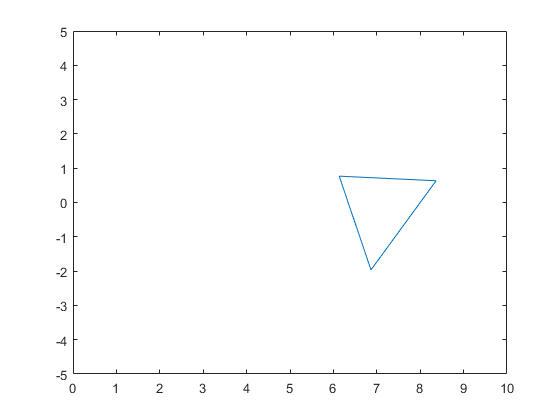

Contents
3.9
p1 = [6 ; 3 ; 1]
p2 = [4 ; 1 ; 1]
p3 = [7 ; 1 ; 1]
T1 = [ 1 0 -8 ; 0 1 -2 ; 0 0 1]
R = [cos(pi/3) -sin(pi/3) 0 ; sin(pi/3) cos(pi/3) 0; 0 0 1]
T2 = [ 1 0 8 ; 0 1 2 ; 0 0 1]
M = T2 * R * T1
p12 = M * p1
p22 = M * p2
p32 = M * p3
plot([6; 4; 7; 6], [3; 1; 1; 3])
axis([0 10 -5 5])
figure(2)
plot([p12(1,:) ; p22(1,:) ; p32(1,:) ; p12(1,:)], [p12(2,:) ; p22(2,:) ; p32(2,:) ; p12(2,:)])
axis([0 10 -5 5])
p1 =
6
3
1
p2 =
4
1
1
p3 =
7
1
1
T1 =
1 0 -8
0 1 -2
0 0 1
R =
0.5000 -0.8660 0
0.8660 0.5000 0
0 0 1.0000
T2 =
1 0 8
0 1 2
0 0 1
M =
0.5000 -0.8660 5.7321
0.8660 0.5000 -5.9282
0 0 1.0000
p12 =
6.1340
0.7679
1.0000
p22 =
6.8660
-1.9641
1.0000
p32 =
8.3660
0.6340
1.0000
 
3.20
T1 = [ 1 0 0 2 ; 0 1 0 0 ; 0 0 1 -4 ; 0 0 0 1]
RY = [cos(-2*pi/3) 0 sin(-2*pi/3) 0 ; 0 1 0 0 ; -sin(-2*pi/3) 0 cos(-2*pi/3) 0 ; 0 0 0 1]
T2 = [ 1 0 0 -2 ; 0 1 0 0 ; 0 0 1 4 ; 0 0 0 1]
M = T2 * RY * T1
T1 =
1 0 0 2
0 1 0 0
0 0 1 -4
0 0 0 1
RY =
-0.5000 0 -0.8660 0
0 1.0000 0 0
0.8660 0 -0.5000 0
0 0 0 1.0000
T2 =
1 0 0 -2
0 1 0 0
0 0 1 4
0 0 0 1
M =
-0.5000 0 -0.8660 0.4641
0 1.0000 0 0
0.8660 0 -0.5000 7.7321
0 0 0 1.0000
3.23
A = [0 ; 1; sqrt(3)]
r = acos(1/sqrt(3))
RX1 = [1 0 0 0 ; 0 cos(r) -sin(r) 0 ; 0 sin(r) cos(r) 0 ; 0 0 0 1]
RZ = [cos(pi/3) -sin(pi/3) 0 0 ; sin(pi/3) cos(pi/3) 0 0; 0 0 1 0 ; 0 0 0 1]
RX2 = [1 0 0 0 ; 0 cos(-r) -sin(-r) 0 ; 0 sin(-r) cos(-r) 0 ; 0 0 0 1]
M = RX2 * RZ * RX1
A =
0
1.0000
1.7321
r =
0.9553
RX1 =
1.0000 0 0 0
0 0.5774 -0.8165 0
0 0.8165 0.5774 0
0 0 0 1.0000
RZ =
0.5000 -0.8660 0 0
0.8660 0.5000 0 0
0 0 1.0000 0
0 0 0 1.0000
RX2 =
1.0000 0 0 0
0 0.5774 0.8165 0
0 -0.8165 0.5774 0
0 0 0 1.0000
M =
0.5000 -0.5000 0.7071 0
0.5000 0.8333 0.2357 0
-0.7071 0.2357 0.6667 0
0 0 0 1.0000
3.25
RX1 = [1 0 0 0 ; 0 cos(pi/2) -sin(pi/2) 0 ; 0 sin(pi/2) cos(pi/2) 0 ; 0 0 0 1]
P = [1 0 0 0 ; 0 1 0 0 ; 0 0 0 0 ; 0 0 (-1/10) 1]
RX2 = [1 0 0 0 ; 0 cos(-pi/2) -sin(-pi/2) 0 ; 0 sin(-pi/2) cos(-pi/2) 0 ; 0 0 0 1]
M = RX2 * P * RX1
p1 = [1 ; 2 ; 3; 1]
p2 = [4 ; -1 ; 0; 1]
p3 = [5 ; 2 ; 3 ; 1]
p1t = M * p1 * 10/8
p2t = M * p2 * 10/11
p3t = M * p3 * 10/8
RX1 =
1.0000 0 0 0
0 0.0000 -1.0000 0
0 1.0000 0.0000 0
0 0 0 1.0000
P =
1.0000 0 0 0
0 1.0000 0 0
0 0 0 0
0 0 -0.1000 1.0000
RX2 =
1.0000 0 0 0
0 0.0000 1.0000 0
0 -1.0000 0.0000 0
0 0 0 1.0000
M =
1.0000 0 0 0
0 0.0000 -0.0000 0
0 -0.0000 1.0000 0
0 -0.1000 -0.0000 1.0000
p1 =
1
2
3
1
p2 =
4
-1
0
1
p3 =
5
2
3
1
p1t =
1.2500
-0.0000
3.7500
1.0000
p2t =
3.6364
-0.0000
0.0000
1.0000
p3t =
6.2500
-0.0000
3.7500
1.0000
3.28
P = [1 0 0 0 ; 0 1 0 0 ; 0 0 0 0 ; 0 0 -1/d 1]
PI = limit(P, d, inf)
syms x y z;
p = PI * [x ; y ; z ; 1]
P =
[ 1, 0, 0, 0]
[ 0, 1, 0, 0]
[ 0, 0, 0, 0]
[ 0, 0, -1/d, 1]
PI =
[ 1, 0, 0, 0]
[ 0, 1, 0, 0]
[ 0, 0, 0, 0]
[ 0, 0, 0, 1]
p =
x
y
0
1